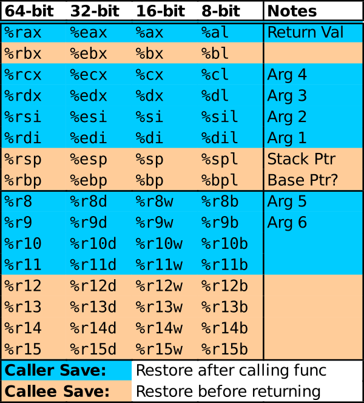

CMSC216 Lab05: Basic Assembly Coding
- Due: 11:59pm Sun 11-Oct-2026 on Gradescope
- Approximately 1.00% of total grade
CODE DISTRIBUTION: lab05-code.zip
CHANGELOG: Empty
1 Rationale
Certain applications utilize bits at an individual level. This is enabled by support for bit-level operations in most processors which are presented in C programs as bit-wise logical and shift operations. This lab explores the basic mechanics of these operations in preparation for project work which will provide a concrete application for them. It also includes a callback to GDB usage to remind students of the insight the debugger can have.
This lab also introduces the basics of assembly having students complete a template of assembly code that mirrors a given C application. This will introduce folks to some syntax and semantics associated with assembly programs.
Associated Reading
- Bryant and O'Hallaron: Ch 3.1-3.7 on assembly code instructions in x86-64. The first few sections are along with an understanding of argument registers is sufficient to complete the problems.
- Any overview guide to x86-64 assembly instructions such as Brown University's x64 Cheat Sheet
- To more easily debug assembly, it is useful to be able to run a
debugger like
gdbon the assembly code. Examine the Quick Guide to GDB which contains information specific to assembly as such as how to display the register contents.
It is also advisable to configure your editing environment for assembly code. For those using VSCodium, the following short video shows how to install an assembly editing mode that supports the GNU Assembler dialect and shows how to block comment/uncomment code.
Configuring VSCodium / VSCode for x86-64 Assembly: https://youtu.be/AgmXUFOEgIw
Grading Policy
Credit for this lab is earned by completing the code/answers in the
Lab codepack and submitting a Zip of the work to Gradescope preferably
via running make submit. Students are responsible to check that the
results produced locally are reflected on Gradescope after submitting
their completed Zip.
Lab Exercises are Free Collaboration and students are encouraged to cooperate on labs. Students may submit work as groups of up to 5 to Gradescope: one person submits then adds the names of their group members to the submission.
No late submissions are accepted for Lab work but the lowest two lab scores for the semester will be dropped including zeros due to missing submissions. See the full policies in the course syllabus.
2 Codepack
The codepack for this lab is linked at the top of this document. Always download it and unzip/unpack it. It should contain the following files which are briefly described.
| File | Use | Description |
|---|---|---|
asmbasics_funcs_asm.s |
EDIT | Problem 1 x86-64 Assembly versions of functions, some must be completed |
asmbasics_main.c |
Provided | Problem 1 main function which calls functions which may be in either C or Assembly |
asmbasics_funcs.c |
Provided | Problem 1 C versions of functions |
coins_funcs_asm.s |
EDIT | Problem 2 Incomplete Assembly functions, fill in remaining code |
coins_main.c |
Provided | Problem 2 main() function |
coins.h |
Provided | Problem 2 C header |
coins_funcs.c |
Provided | Problem 2 C functions to be implemented in assembly, code here can be used to test incrementally |
QUESTIONS.txt |
EDIT | Questions to answer: fill in the multiple choice selections in this file. |
QUESTIONS.txt.bk |
Backup | Backup copy of the original file to help revert if needed |
QUESTIONS.md5 |
Testing | Checksum for answers in questions file |
Makefile |
Build | Enables make test and make zip |
test_quiz_filter |
Testing | Filter to extract answers from Questions file, used in testing |
test_lab05.org |
Testing | Tests for this exercise |
testy |
Testing | Test running scripts |
gradescope-submit |
Misc | Allows submission to Gradescope from the command line |
3 Register Reference
The assembly code studied in this lab involves registers with some special uses. The figure below is helpful to remind of the 16 general purpose registers available in x86-64 architectures, the various names used for them in 16-bit / 32-bit / 64-bit operations, and some of their special uses. Of special note are:
- Function Arguments / Parameters in Registers: up to 6 arguments are passed in registers and they are labeled in the diagram.
- Caller vs Callee Save registers: favor use only Caller-Save (blue) registers as this does not require any register save/restore actions which will be studied later.

4 Problem 1 Basic Assembly Syntax
This problem is the first exposure to assembly syntax which is quite different from high-level programming languages. Two related files are the focus:
asmbasics_funcs.c: simple arithmetic functions in C coded in a style similar to how assembly instructions will be generated for them. All functions are complete.asmbasics_funcs_asm.s: the same functions in assembly with some function definitions incomplete. TODO functions must be completed by students.
The goal is to complete the asmbasics_funcs_asm.s file so that its
functions carry out the same computation as those in
asmbasics_funcs.c. This will require coming to grips with
- Basic arithmetic instructions like
addlandimull - Registers to store data such as
%eaxand%edx - The special use for some registers such as
%edi / %esifor the first two function parameters and%eaxfor the return value of a function
Some guidance is included at the top of asmbasics_funcs_asm.s to
help students get started. Study this and ask questions.
5 Problem 2 coins Structs in Assembly
The files coinsmain.c and coinsfuncs.c combine to execute a simple
"algorithm" to calculate the number of quarters, dimes, nickels, and
pennies in order to "make change" for a given number of cents. These
use the coins_t struct that is defined in coins.h and it should be
easy to understand the C code involved.
coinsfuncsasm.s has partially complete x86-64 versions of the functions in coinsfuncs.c that must be completed. The assembly versions expose several low-level aspects of assembly languages
- Registers that contain memory addresses can be "dereferenced" like C
pointer with the assembly "indirect" syntax:
movl $5,(%reg) - Pointers to structs in memory often have a constant offset
associated with them such as
6(%reg)for a field that is 6 bytes from the start of struct - Registers may contain a "packed" struct where the entirety of the struct is packed into a single register which requires bit shifts and masking to extract individual fields
coins.h has a table which shows information on the byte layout of the
coins_t struct in memory and should be studied to understand the
steps to take. Additionally, QUESTIONS.txt has information on relevant
assembly instructions and techniques.
6 QUESTIONS.txt File Contents
Below are the contents of the QUESTIONS.txt file for the exercise.
Follow the instructions in it to complete the QUIZ and CODE questions
for the exrecise.
_________________
LAB05 QUESTIONS
_________________
Exercise Instructions
=====================
Follow the instructions below to experiment with topics related to
this exercise.
- For sections marked QUIZ, fill in an (X) for the appropriate
response in this file. Use the command `make test-quiz' to see if
all of your answers are correct.
- For sections marked CODE, complete the code indicated. Use the
command `make test-code' to check if your code is complete.
- DO NOT CHANGE any parts of this file except the QUIZ sections as it
may interfere with the tests otherwise.
- If your `QUESTIONS.txt' file seems corrupted, restore it by copying
over the `QUESTIONS.txt.bk' backup file.
- When you complete the exercises, check your answers with `make test'
and if all is well. Create a zip file and submit it to Gradescope
with `make submit'. Ensure that the Autograder there reflects your
local results.
- IF YOU WORK IN A GROUP only one member needs to submit and then add
the names of their group on Gradescope.
PROBLEM 1 Background on asmbasics
=================================
The `asmbasics_*' files allow for the construction of two executables
which can be built via `make'.
,----
| >> make
| ...
| >> ./asmbasics_c_only # C only version, asmbasics_main.c and asmbasics_funcs.c
| Let's explore Euclid's formula!
| ...
|
| >> ./asmbasics_mixed # Mixed C/Assmebly version: asmbasics_main.c and asmbasics_funcs_asm.s
| Let's explore Euclid's formula!
| ...
`----
Both executables will do the same thing.
- Accept to integer on the command line
- Demonstrate a simple numerical relationship that Euclid worked out
in the BC era.
The intent of studying them is to get acquainted with how x86-64
assembly instructions work by observing C code and equivalent assembly
code then writing some assembly code that is equivalent to existing C
code.
Demoers will tour the slightly odd looking C code in
`asmbasics_funcs.c' which are very short, arithmetically oriented
functions. The code is written in an unusual style but one which
matches the basic arithmetic operations that x86-64 Assembly
instructions carry out making it easier to see the connection between
C code and the provided assembly code. These appear in
`asmbasics_funcs_asm.s' which is an x86-64 assembly source file.
To pass automated tests, coders will need get a basic understanding of
how assembly looks and works and then complete the TODO function in
`asmbasics_funcs_asm.s'.
PROBLEM 1 QUIZ on asmbasics
===========================
The function code in `asmbasics_funcs.c' looks a little odd because
- ( ) It uses only operators like +=, *=, -= and so forth
- ( ) It sets up an `ans' variable in each function to return a value
rather than just returning something like a+b
- ( ) Only two variables are used in any arithmetic expression;
statements like `a = b+c;' do not appear
- ( ) Actually all of these things are done and while readable, it
seems inelegant
On inspecting three provided assembly functions `difference, squared,
squared_sum' in `asmbasics_funcs_asm.s', these show how many arguments
and give them names by
- ( ) Similar to C, they have a prototype like `difference(edi,esi)'
which shows the registers storing the arguments but not their types
- ( ) The parameter names are listed below the functions which looks a
bit strange
- ( ) They don't list how many and where parameters come in; it's the
same for all functions and listed in documentation at the top of the
file without anything in the function code giving clues about it
- ( ) Trick question: it's actually not possible to pass parameters
directly in assembly functions
The equivalent of the `ans' variable used as the return variable in
the C functions is this thing in x86-64 assembly:
- ( ) The %eax register
- ( ) The ret instruction
- ( ) The %edi register
- ( ) The addl instruction
Which of the following is a valid sequence of instructions that will
complete the `squared_diff' assembly function?
,----
| squared_diff:
| movl %eax, %edi # (A)
| imull %edi, %edi
| imull %esi, %esi
| subl %esi, %edi
| ret %edi
|
| squared_diff:
| movl %edi, %eax # (B)
| imull %eax, %eax
| imull %esi, %esi
| subl %esi, %eax
| ret
|
| squared_diff:
| movl %eax, %edi # (C)
| imull %eax, %eax
| imull %esi, %esi
| subl %eax, %esi
| ret
|
| squared_diff:
| movl %edi, %eax # (B)
| imull %eax, %eax
| imull %esi, %esi
| subl %esi, %eax
| ret %eax
`----
- ( ) A
- ( ) B
- ( ) C
- ( ) D
PROBLEM 1 CODE Complete asmbasics_funcs_asm.s
=============================================
Complete the TODO portions of the code in `asmbasics_funcs_asm.s' and
run the provided tests. The output should be identical to the behavior
given when the C versions are run. Experiment with these two
executables and compare their behavior if in doubt:
- `asmbasics_c_only' : compiled with C code for main and functions
- `asmbasics_mixed' : compiled with C code for main and assembly code
for functions
Test that the code behaves correctly via the command
,----
| make test-prob1
`----
PROBLEM 2 Background on Coins Assembly Functions
================================================
The goal of this problem is to complete working assembly code for two
functions with available C versions. These are as follows:
,----
| int set_coins(int cents, coins_t *coins);
| // Calculate number of quarters, dimes, nickels, pennies of
| // change. Param cents is the number of cents, 0-99. Param coins is a
| // pointer to a structure which will have its fields set to the number
| // of coins of each type. Returns 0 on success. If cents is out of
| // range, no values are changed and 1 is returned.
|
| int total_coins(coins_t coins);
| // Returns the total number of cents in the given coins struct.
`----
Implement these functions in the file `coins_funcs_asm.s'. This file
contains documentation and partial implementations of the functions:
complete the code in this file.
To complete the assembly code, you will need to know about layout of
the `coin_t' data type used in the functions. This information is in
the `coins.h' header file and is repeated below:
,----
| typedef struct { // Type for collections of coins
| short quarters;
| short dimes;
| short nickels;
| short pennies;
| } coins_t;
| // coint_t has the following memory layout and argument passing
| // properties:
| //
| // | | Pointer | Packed | Packed |
| // | | Memory | Struct | Struct |
| // | Field | Offset | Arg# | Bits |
| // |----------+---------+--------+--------|
| // | quarters | +0 | #1 | 0-15 |
| // | dimes | +2 | #1 | 16-31 |
| // | nickels | +4 | #1 | 32-47 |
| // | pennies | +6 | #1 | 48-63 |
| //
| // Since the entire struct is less that 64-bits, it is passed in a
| // single argument register on 64-bit systems when passed as a value
| // such as in the below total_coins() function.
`----
Importantly, there is information on
1. Byte-level layout of a `coin_t' when it is stored in main memory,
pertinent to `set_coins()'
2. Bit-level layout of `coin_t' when the struct is packed into an
argument register, pertinent to `total_coins'
Study this information and examine the existing code to get a sense
for how to complete the rest. *Ask questions* of discussion staff if
you do understand some things that you see.
When the function are completed, the `coins_main' program can be used
to experiment with them such as in the following examples.
,----
| >> make
| gcc -Wall -Werror -g -o coins_main_mixed coins_main.c coins_funcs_asm.s
|
| >> ./coins_main_mixed 37
| 37 cents is...
| 1 quarters
| 1 dimes
| 0 nickels
| 2 pennies
| which is 37 cents
|
| >> ./coins_main 91
| 91 cents is...
| 3 quarters
| 1 dimes
| 1 nickels
| 1 pennies
| which is 91 cents
|
| >> ./coins_main 9
| 9 cents is...
| 0 quarters
| 0 dimes
| 1 nickels
| 4 pennies
| which is 9 cents
`----
`set_coins' Assembly Function
~~~~~~~~~~~~~~~~~~~~~~~~~~~~~
Use of the Division Instruction
-------------------------------
The main purpose of `set_coins' is to repeatedly divide the "cents" by
different coin values to determine how many quarters, dimes, nickels,
and pennies are required. Note the use of division instructions to
accomplish this in the provided code:
,----
| ## BLOCK B
| movl %edi,%eax # eax now has cents
| cltd # prep for division
| movl $25,%r8d
| idivl %r8d
| movb %al,0(%rsi) # coins->quarters = cents / 25
| movl %edx,%eax # cents = cents % 25
| ...
`----
Take care to understand some unique quirks of the `idivl' instruction:
it MUST have the number to be divided in the A-family register, `%eax'
in this case and after completing, the `%eax / %edx' contain the
quotient and remainder of the division respectively. The last `movl'
instruction sets up the next division to compute the number of dimes
by moving the remaining cents into `%eax' again for another division.
Setting Struct Fields in Memory
-------------------------------
Note the use of `movb' to move a single byte from the A-family
register into main memory.
- `%al' is the lowest order byte in the `%rax / %eax' register. The
division by `25' is expected to produce a small number which can be
represented in a single byte.
- `movb' is chosen to move a single byte from the register into main
memory. This also matches the size of the `quarters' field of
`coins_t': it is a `char' which is only 1 byte big.
- The location `0(%rsi)' is used as `%rsi' contains a pointer to a
`coins_t' and the `quarters' field is 0 bytes offset from this
pointer. This is the type of assembly instruction that would be
generated for C code like `coins->quarters = cents / 25;'
Copy this pattern to other locations noting that the fields for `dimes
/ nickels / pennies' are at different locations from the beginning of
the `coins_t' struct so will require different move offsets such as
`2(%rsi)'.
`total_coins' Assembly Function
~~~~~~~~~~~~~~~~~~~~~~~~~~~~~~~
Packed Struct Arguments
-----------------------
Consider the C prototype and assembly documentation given for the
function:
,----
| int total_coins(coins_t coins);
`----
,----
| .globl total_coins
| total_coins:
| ### args are
| ### %rdi packed coin_t struct with struct fields in the following bit rangs
| ### {0-7: quarters, 8-15: dimes, 16-23-: nickels, 24-31: pennies}
`----
At the assembly level, an entire `coins_t' struct is passed into
`total_coins()' as a single argument: each field of `quarters / dimes
/ nickels / pennies' comes in via the `%rdi' register.
To extract each field separately, a series of shift/mask operations
are performed in assembly via the `sarq' (shift right) and `andq'
(bitwise-and) instructions. Each field is a single byte big so after
a right shift, `andq'-ing onto a mask like `0xFF' will leave only a
single field present such as in the provided code to extract the dimes
field which is in bits 8-15 of the `%rdi' register:
,----
| movq %rdi,%rdx # extract dimes: copy arg to work register
| sarq $8,%rdx # move dimes to low order bits
| andq $0xFF,%rdx # rdx = dimes
`----
Employ this pattern in the indicated location to complete the
remainder of the function.
PROBLEM 2 QUIZ: Assembly Functions
==================================
Answer the following questions on basic techniques for assembly
function coding.
How are the first 6 arguments to an assembly functions made available
within the function?
- ( ) Arguments are passed in registers; the first two are in the
`%rax' and `%rbx' registers
- ( ) Arguments are passed in registers; the first two are in the
`%rdi' and `%rsi' registers
- ( ) Arguments are in the stack; the first two are available using
the stack pointer as `0(%rsp)' and `8(%rsp)'
- ( ) Arguments are in the stack; the first two are available using
the stack pointer as `8(%rsp)' and `12(%rsp)'
Which of the following best describes how the kind of arguments passed
to the FIRST function `set_coins()' function in assembly?
- ( ) An integer in `%edi' and a pointer to a struct in `%rsi'; to
get/set fields of the struct syntax like `2(%rsi)' is used
- ( ) An integer in `%edi' and a packed struct in `%rsi'; to get/set
fields of the struct bitwise shifts and AND operations are used
- ( ) An integer in `%esi' and a pointer to a struct in `%rdi'; to
get/set fields of the struct syntax like `2(%rsi)' is used
- ( ) An integer in `%esi' and a packed struct in `%rdi'; to get/set
fields of the struct bitwise shifts and AND operations are used
Which of the following best describes how the kind of arguments passed
to the SECOND function `total_coins()' function in assembly?
- ( ) A pointer to a struct in `%rsi'; to get/set fields of the struct
syntax like `2(%rsi)' is used
- ( ) A packed struct in `%rsi'; to get/set fields of the struct
bitwise shifts and AND operations are used
- ( ) A pointer to a struct in `%rdi'; to get/set fields of the struct
syntax like `2(%rsi)' is used
- ( ) A packed struct in `%rdi'; to get/set fields of the struct
bitwise shifts and AND operations are used
PROBLEM 2 CODE: Complete coins_funcs_asm.s
==========================================
Complete the two assembly functions in `coins_funcs_asm.s' so that it
can be combined with `coins_main.c' to create the program
`coins_main_mixed'. Note that until both functions are complete, the
tests will likely fail. Correct output will appear something like the
following:
,----
| >> make
| ...
|
| >> ./coins_main_mixed 88
| set_coins():
| 88 cents is...
| 3 quarters
| 1 dimes
| 0 nickels
| 3 pennies
| total_coins():
| which is 88 cents
`----
Make sure to complete both assembly functions and test them via
,----
| make test-prob2
`----
6.1 Submission
Follow the instructions at the end of Lab01 if you need a refresher on how to upload your completed exercise zip to Gradescope.